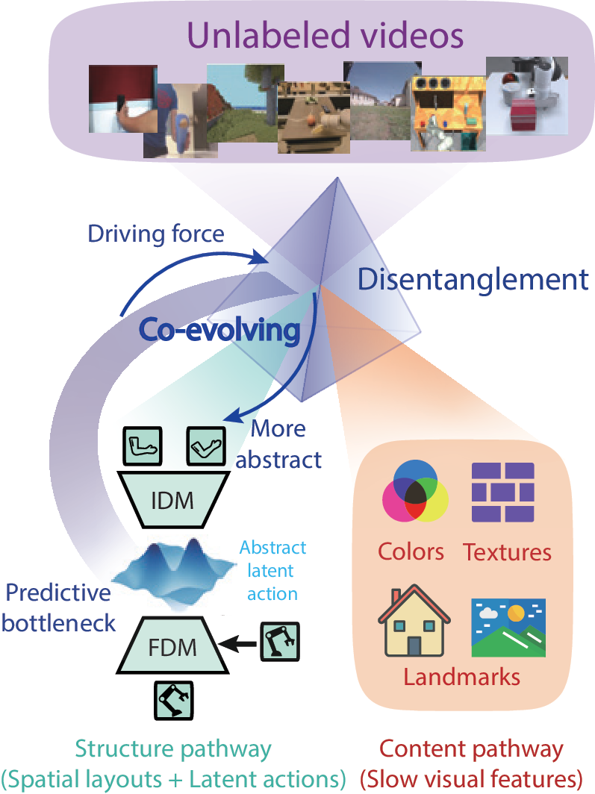
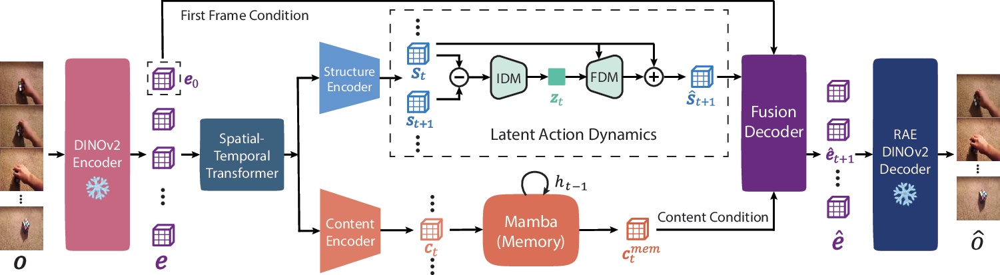
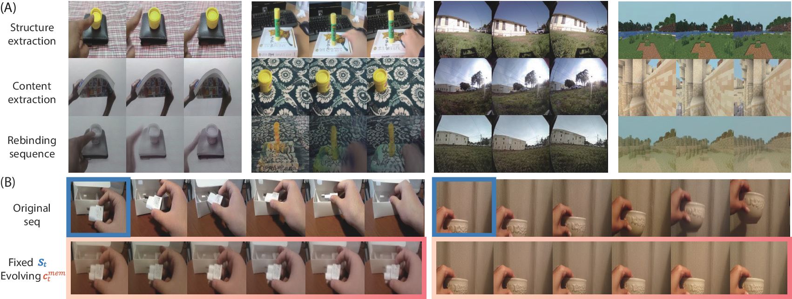
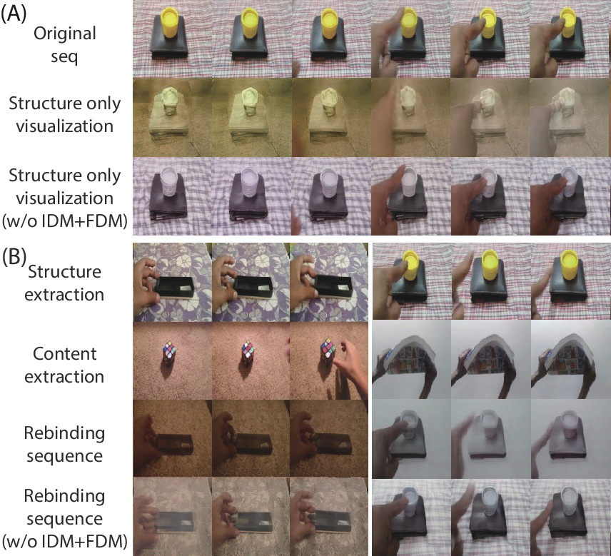
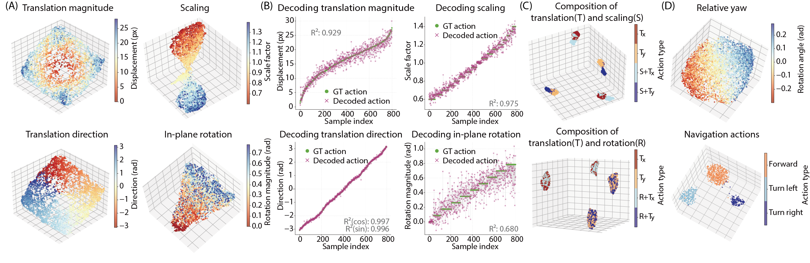

Unified LAM and world model
DiLA learns latent actions and future dynamics end-to-end from observation sequences.
Latent Action Models · World Models · Disentangled Representation Learning
Learning abstract, reusable latent actions from unlabeled videos while preserving high-fidelity world-model predictions through content-structure disentanglement.
Peking University
Latent Action Models learn world models from unlabeled video by inferring abstract actions between frames, but they often face a trade-off between action abstraction and generation fidelity. DiLA resolves this tension through content-structure disentanglement: the predictive bottleneck drives motion-relevant spatial layout into a structure pathway, while a separate content pathway preserves appearance and scene details for generation. This co-evolution yields continuous, semantically structured latent actions that transfer across embodiments, support interpretable manifold analysis, and improve downstream visual planning.
Overview
Latent Action Models infer action-like variables directly from unlabeled videos, avoiding the need for expensive action-labeled data. Yet existing LAMs face a persistent tension: strong bottlenecks encourage abstract and transferable actions, while weaker bottlenecks preserve generation quality but often entangle actions with visual appearance.
DiLA reframes this tension as a disentanglement problem. It separates video features into a structure pathway that captures dynamics-relevant spatial layouts and a content pathway that stores appearance, texture, and slowly revealed scene details. The predictive bottleneck in latent action learning drives structure-content separation, and that separation makes the latent actions more abstract.

DiLA learns latent actions and future dynamics end-to-end from observation sequences.
The structure pathway models motion, while the content pathway preserves visual details for generation.
Continuous latent actions support cross-embodiment transfer, visual planning, and interpretable analysis.
Method
DiLA predicts in the latent feature space: DINOv2 extracts visual embeddings, the structure pathway learns abstract latent actions, the content pathway maintains memory, and a fusion decoder recombines both streams for future-frame embedding prediction.

A structure encoder compresses video tokens into spatial layouts. An inverse dynamics model extracts latent actions from temporal differences, and a forward dynamics model predicts the next structure state.
A content encoder and Mamba memory aggregate temporally invariant visual information, including occluded backgrounds and scene details that should not be stored in actions.
A dual cross-attention decoder combines predicted structure, content memory, and the initial visual embedding to reconstruct target DINOv2 embeddings.
Rollouts are performed autoregressively in structure space, giving DiLA a compact dynamics model for transfer and planning.
Core design of latent action space
DiLA predicts and rolls out dynamics in a compact DINOv2 latent space, avoiding pixel-level reconstruction during training while preserving semantic visual structure.
Latent actions are learned from temporal differences in structure embeddings, forcing the action code to capture transition dynamics rather than static content.
Forward and backward transitions are constrained to form opposite latent action vectors, shaping a continuous and semantically meaningful action manifold.
Results
The core experimental evidence is organized around action transfer and content-structure disentanglement. Quantitative ablations are shown separately below.
Action Transfer
DiLA extracts latent actions from a source video and applies them to a target context, including human-to-robot transfer, cross-object semantic transfer, intra-domain transfer, and navigation transfer between virtual and real scenes.
Content-Structure Disentanglement
Structure from one sequence can be recombined with content from another. The output follows the source spatial layout while inheriting reference appearance, texture, and scene details.

Ablation
Removing latent action learning or replacing DiLA's bottleneck weakens either disentanglement, generation fidelity, or cycle-transfer robustness.

Lower rollout and cycle-transfer LPIPS indicate stronger generation fidelity and transferability.
| Model | Rollouts↓ | Cycle transfer↓ | 10k MSE↓ |
|---|---|---|---|
| DiLA w/o content | 0.344 | 0.451 | 0.249 |
| Discrete z | 0.334 | 0.442 | 0.262 |
| Gaussian z | 0.346 | 0.434 | 0.265 |
| DiLA | 0.263 | 0.343 | 0.216 |
Analysis
On controlled and out-of-distribution settings, DiLA's continuous action space aligns with physical transformation parameters and downstream control signals.

Mean squared error on unseen robotic benchmarks.
| Method | Franka | Block | Push-T | LIBERO |
|---|---|---|---|---|
| Discrete z | 0.098 | 0.061 | 0.023 | 0.160 |
| Gaussian z | 0.125 | 0.102 | 0.041 | 0.190 |
| DiLA | 0.073 | 0.037 | 0.009 | 0.119 |
Visual Planning
After action adaptation, DiLA serves as the visual dynamics model for MPPI planning and improves aggregate VP2 success over AdaWorld.
Average over 4 independent runs per task. Aggregate success is normalized relative to the ground-truth simulator baseline.
| Method | Robosuite push | Open slide | Blue button | Green button | Red button | Upright block | Aggregate |
|---|---|---|---|---|---|---|---|
| AdaWorld | 63.50 | 5.83 | 29.17 | 10.83 | 10.00 | 5.00 | 21.54 |
| DiLA | 68.00 | 15.00 | 78.33 | 35.83 | 20.83 | 3.33 | 41.44 |
Citation
@inproceedings{zhang2026dila,
title = {{DiLA}: Disentangled Latent Action World Models},
author = {Zhang, Tianqiu and Lyu, Muyang and Zhang, Yufan and Fang, Fang and Wu, Si},
booktitle = {Forty-third International Conference on Machine Learning},
year = {2026},
url = {https://openreview.net/forum?id=BRBHruBDkb}
}